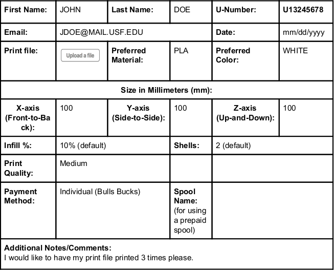

*Please be aware that under our discretion, we are able to deny any 3D print submission*
To submit a file for 3D printing :
Please direct all 3D printing related questions to advancedvisualizationcenter@gmail.com
Q: When will my print be ready?
A: Our policy here at the lab is that your print’s estimated time of completion is print time + place in queue + 2 days. However, feel free to email advancedvisualizationcenter@gmail.com anytime regarding the status of your print.
Q: How will I know when my print is ready? Will you send me an email?
A: Unfortunately here at the AVC we do not send out emails when a print is completed. We expect all students to regularly check up on the status of their prints via email or walk-in. However, feel free to email advancedvisualizationcenter@gmail.com anytime regarding the status of your print.
Q: How much will my print cost?
A: The cost of printing at the AVC is available on our website at https://avc.web.usf.edu/resources/3d_printing.php#prices. However, if you would like to receive an estimate of your print, please email advancedvisualizationcenter@gmail.com with your name and request a price estimate after submitting your file(s).
Q: What file format can I use to have my part printed?
A: We only accept files in the format of .stl or .obj. We DO NOT accept other file types like those used by CAD programs such as .sldprt, .f3d, or .step. However, you can easily convert files in this format by opening the file in its respective CAD software and exporting as a .stl.
Q: What types of colors are available?
A: We have a wide variety of colors available at the AVC! We have all the primary colors and secondary colors in a variety of shades. We also carry other colors such as khaki, …..
Q: What type of materials do you have?
A: The materials we offer here at the AVC are: PLA, ABS, PETG, TPU, and Resin
Q: Am I allowed to bring my own filament?
A: Currently, we do not accept filament outside of our own lab’s supply. We have a wide variety of colors and material types and encourage you to utilize them!
Q: When and how can I pay for my print?
A: We ask that you pay for your print upon pickup. We do not accept cash or credit/debit cards as a form of payment, we only accept BullBucks. The process for uploading Bulls Bucks into your account is very simple! Please visit https://www.usf.edu/it/bull-bucks/ for more information!
Q: Where is the Advanced Visualization Center 3D print lab located?
A: We are located at CMC 153
Q: What software can I use to design a part?
A: Programs such as Meshmixer (free) and Maya (free) are great 3d sculpting programs for creating organic models. Fusion 360 (free) and SolidWorks (free at USF) are great for making precise and/or parametric designs, especially when creating projects that involve many parts that will need multiple iterations
Q: What unit of measurement should I use to design my parts in?
A: Typically, designs made for 3D printing are done in millimeters (mm) so we suggest designing the parts you submit in millimeters. However, if the part you submit happens to be designed in inches, we can easily convert it, just be sure to let us know!
Q: How big can my 3D model be?
A: Generally, we suggest prints be smaller than 225mm x 140mm x 150mm. However, with approval, we will allow prints up to 250mm x 280mm x 300mm.
Q: My model is too big, what do I do???
A: If your model exceeds our printers’ build volume, and the exact dimensions of your model are not important, you can specify the size you’d like it to be (in mm) and we can rescale it for you. If reducing the size of your model is not an option, there are many ways to split your model up into smaller pieces that can later be joined together. To learn how to do this we suggest watching this tutorial to use MeshMixer, a free application, to cut a large models into smaller, printable pieces.
Q: Where can I find parts that are already designed?
A: www.Thingiverse.com and www.MyMiniFactory.com have tons of 3D designs that you can download for free!
Q: What quality should I chose?
A: Quality can have a huge impact on your part, but printing in the highest quality isn’t always the best choice. A higher print quality will greatly increase the printing time, thus increasing price as well. Parts with a lower quality will print faster and decrease the final price. For example, a print with a 0.1mm layer height will take twice as long as the same print with a 0.2mm layer height.
Q: How will infill percentage and shell count impact my print?
A: A higher infill percentage and shell count will result in a stronger part, but can greatly increase printing time, thus increasing the final price of your part. We recommend 10% infill and 2 shells for a good balance between strength and price, even lower if your design will undergo several iterations, to get a quick and cheap print that you can use to test and modify.
Q: What types of 3D printing do you offer?
A: We currently offer FDM and SLA 3D printing. 99% of our prints are done using FDM as this is the quicker, cheaper, and easiest method - but in special cases we will allow parts to be printed using SLA. However, we recommend talking to staff about this beforehand to ensure that it is the best decision.
Q: Can I get my really big part printed in ABS with 100% infill.
A: No.
Q: Can I get a weapon 3D printed?
A: No.